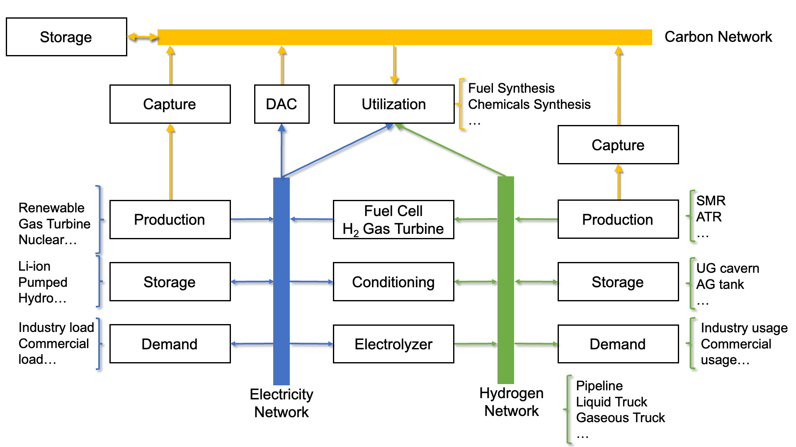

Research: Coupled Electricity-Hydrogen-carbon Energy System Optimization
DOLPHYN is a highly-configurable, open source Julia package aimed to design and explore future energy system in corporation with new energy sytechnologies like electrolysis and carbon capture.
DOLPHYN model evaluates investments and operations across the bulk supply chain for electricity, H2 and CO2, including production, storage, transmission, conditioning (compression/liquefaction in the case of H2 as well as CO2) and demand. The model determines the least-cost mix of electricity and H2 production, storage, and transmission infrastructures to meet power and H2 demands subject to a variety of operational and policy constraints, considering carbon emissions at the same time.
The developed model can incorporate a wide range of power and H2 technology options, including VRE generation, carbon capture and storage (CCS) applied to power and H2 generation, and truck (gaseous, liquid) and pipelines for H2 transportation. The power systems and H2 supply chain are coupled primarily through electrolysis and power generation technologies fueled by H2, as well as electricity consumption in H2 compression/liquefaction. The key operational constraints of the model include:
DOLPHYN features a modular and transparent code structure developed in Julia + JuMP. The model is designed to be highly flexible and configurable for use in a variety of applications from academic research and technology evaluation to public policy and regulatory analysis and resource planning.
